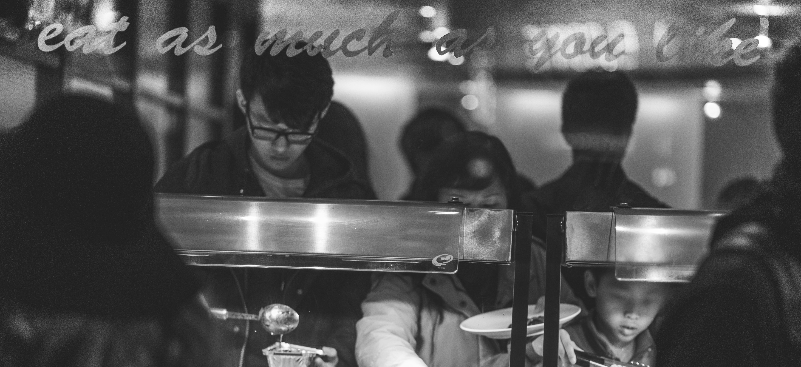

History
Obesity has been a growing problem in the United States for a while now. According to the CDC and data from the 2011-2012 National Health and Nutrition Examination Survey, more than one-third (34.9%) of Americans have obesity. In Cupertino however, the problem is much less severe, yet just as prominent. A study conducted in the summer of 2012 found that around 18.4 percent of students are extremely overweight or obese. This problem stems from a multitude of reasons such as diet, exercise, metabolism, etc. A projected 75 percent of kids who grow up obese will remain obese as adults.
The problem has already been addressed and many actions have been taken to attempt and fix the problem. Michelle Obama and the Obama Administration changed the regulations for school nutrition in 2012 which required healthier foods and larger amounts of it. They passed in in a way so that other food institutes like the National Potato Council were happy with it. Additionally, most high schools require a student to complete a few years of PE credit before they can graduate. This requires the students to perform exercise either in classes or sports and they would be able to maintain a degree of healthiness.
In Cupertino, the costs of living and for daily necessities has risen to an absurd level. The amount of families that can’t afford spending large chunks of money on nutritious foods continuously rises. Thus, the amount of students that purchase and consume the cheap, fatty foods continues to increase as well. Also, the overall activity level of a household and occupational activity has decreased over the years.
Obesity has caused many problems for society in the recent years. The chronic disease has taken a toll on health care and has costed somewhere between $150 million and $225 million since 2010. The average medical costs for individuals with obesity were estimated to be around $1500 more than for those of normal weight. Individuals with obesity have had their ability to work severely diminished. In the workplace, obesity has caused overall productivity to decrease and has increased the amount of absences. The increasing occurrence of these events costs an estimated $503 billion per year and has become a burden on our society.
America is only the 2nd most obese country in the world and was recently overtaken by Mexico. A lot of effort has been put in to solve this chronic problem, however, there have been no infallible solutions as of date.
History compiled by Richard Rao